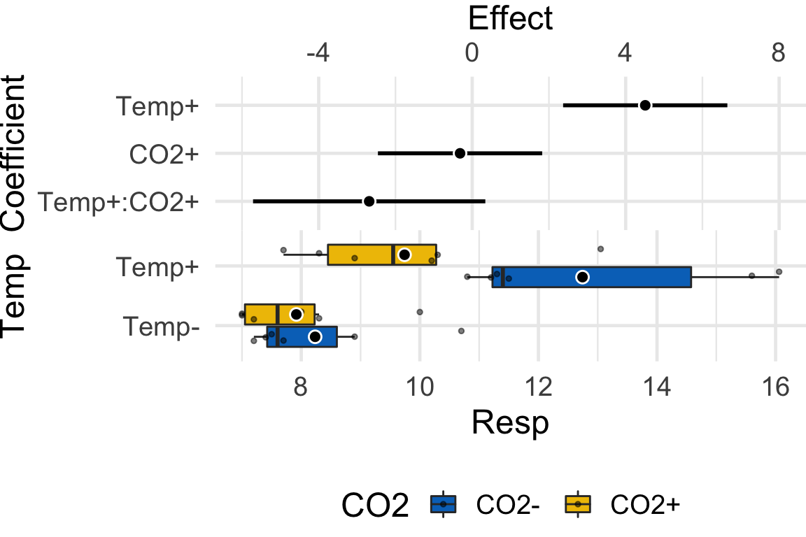
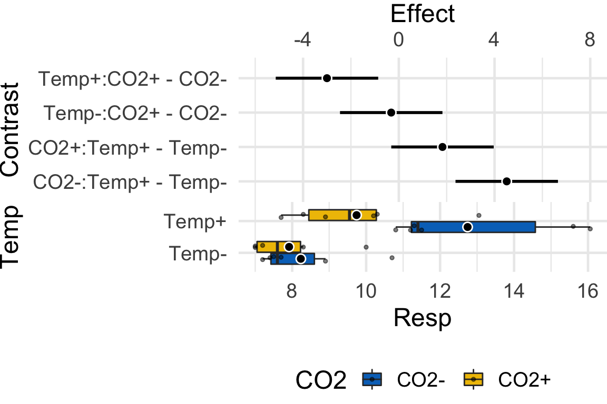
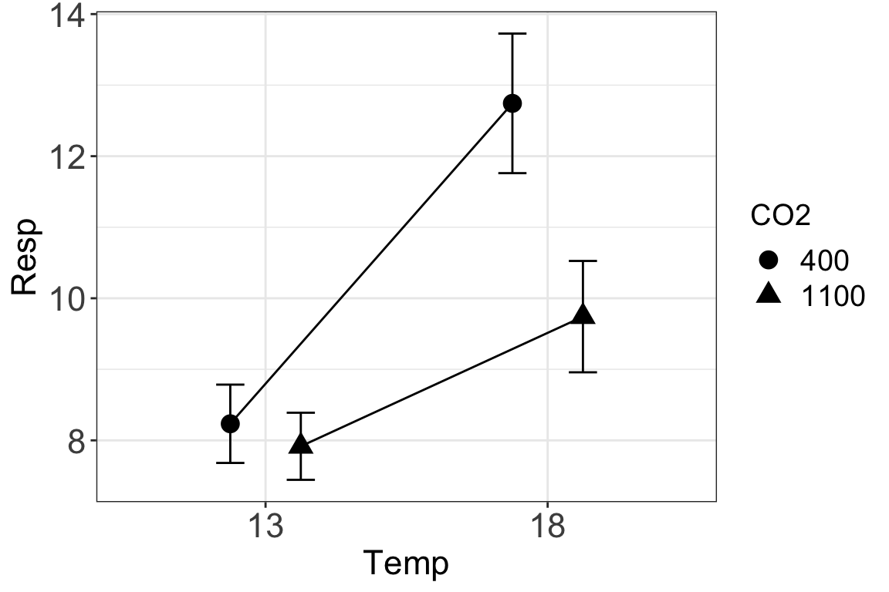

Chapter 10 Two (or more) Categorical \(X\) – Factorial designs
10.1 Factorial experiments
A factorial experiment is one in which there are two or more categorical \(X\) that are crossed, so the groups contain different combinations of levels of each factor. Factorial experiments are used to estimate the interaction between factors. Let’s explore this using data from xxx
The urchin data are from an experiment measuring the effect of \(Temp\) and \(CO2\) on larval sea urchin metabolic rate (\(Resp\)) (there are other outcome measures in the study too). The units of metabolic rate are pmol O2/hr/larva. There are two \(Temp\) levels (13C and 18C) and two \(CO2\) levels (400 µAtm and 1100) and the factors are crossed, so this is a \(2 \times 2\) (crossed or factorial) design. There are \(n=6\) replicates for each combination of the levels. A good way to visualize the treatment combinations in a crossed design is with a \(m \times p\) table showing all combinations of the \(m\) levels of factor 1 (\(Temp\)) against the \(p\) levels of factor 2 (\(CO2\))
The urchin experimental design as a 2 x 2 table
The upper left cell contains the 13C level with the Temperature factor and the 400 µAtm level within the CO2 factor. The replicates in this cell were grown with no added treatments, so this cell is the “control” for Temp and the control for CO2, which we will use as the “reference” group for the linear model. The replicates in the lower left cell were grown with an added temperature treatment (in this case, a 5 C higher temperature). The replicates in the upper right cell were grown an added CO2 treatment (a 700 µATM higher CO2). And finally, the replicates in the bottom right cell were grown with both the added temperature (+5 C) and added CO2 (+700 µATM). Here, I use a “+” or “-” to designate the addition (or not) of the treatment, so our \(2 \times 2\) treatment levels are Temp-/CO2-, Temp+/CO2-, Temp-/CO2+ and Temp+/CO2+.
10.1.1 Model coefficients: an interaction effect is what is leftover after adding the treatment effects to the control
A factorial design allows a researcher to estimate the interaction between two factors. To clarify this, let’s fit the factorial model and look at the coefficient table. The fit model is
\[\begin{equation} Resp_i = b_0 + b_1 Temp^+ + b_2 CO2^+ + b_3 Temp^+ CO2^+ + e_i \end{equation}\]% Again, \(Temp^+\) and \(CO2^+\) are dummy variables. The model also includes \(Temp^+ CO2^+\), which is a dummy variable for the interaction between Temp and CO2. The value of this interaction dummy variable is literally the product of the two main factor dummy variables (\(Temp^+\) and \(CO2^+\)), which can be verified with the model matrix (which here, is computed from the subset of the data that includeds only the first two rows of each treatment combination)
| (Intercept) | Temp+ | CO2+ | Temp+:CO2+ |
|---|---|---|---|
| 1 | 0 | 0 | 0 |
| 1 | 0 | 0 | 0 |
| 1 | 1 | 0 | 0 |
| 1 | 1 | 0 | 0 |
| 1 | 0 | 1 | 0 |
| 1 | 0 | 1 | 0 |
| 1 | 1 | 1 | 1 |
| 1 | 1 | 1 | 1 |
The coefficient table is
| Estimate | Std. Error | t value | Pr(>|t|) | |
|---|---|---|---|---|
| (Intercept) | 8.23 | 0.73 | 11.3 | 0.000 |
| Temp+ | 4.51 | 1.03 | 4.4 | 0.000 |
| CO2+ | -0.32 | 1.03 | -0.3 | 0.761 |
| Temp+:CO2+ | -2.68 | 1.45 | -1.9 | 0.079 |
The Intercept (\(b_0\)) is the mean (8.23) of the reference (Temp-/CO2-) group, and so the mean of the upper left cell in Table 1). The Temp+ coefficient (\(b_1\)) is the estimate of the added temperature effect relative to the reference, and so is the mean of the lower left cell minus the mean of the upper left cell (\(b_1=\bar{Y}_{Temp^+}-\bar{Y}_{-/-}\)). The CO2+ coefficient (\(b_2\)) is the estimate of the added CO2 effect relative to the reference, and so is the mean of the upper right cell minus the mean of the upper left cell (\(b_2=\bar{Y}_{CO2^+}-\bar{Y}_{-/-}\)). The Temp+:CO2+ coefficient (\(b_3\)) is the estimate of the interaction effect, which is the effect in addition to the Temp\(^+\) and CO2\(^+\) effects. If you added \(b_1\) and \(b_2\) to \(b_0\), you would get the mean of the Temp\(^+\)/CO2\(^+\) group if the effects were purely additive. So the interaction effect is the difference between the mean of the bottom right cell and the sum of the coefficients of the other three cells (\(b_3 = \bar{Y}_{Temp^+CO2^+} - (b0 + b1 + b2)\)). An interaction is a non-additive effect. Think about this. Adding 5 C increases respiration by 4.51 units. Adding 700 \(\mu\)ATM CO2 decreases respiration by .32 units. If these effects were purely additive, then adding both 5 C and 700 \(\mu\)ATM should result in a mean of 8.23 + 4.51 - .32 = 12.42 units for the Temp\(^+\)/CO2\(^+\) group. What is the mean of this group?
9.74! So the difference between the ``additive expectation’’ and the actual mean is \(9.74 - 12.42 = -2.68\), which is the interaction effect (coefficient).
10.1.2 What is the biological meaning of an interaction effect?
I can dead lift 150 pounds and my friend Jake can deadlift 175 pounds. Working together, we should be able to lift 325 pounds. What if together, we could actually lift 400 pounds? If this were the case, this would be an interaction with an effect equal to 75 pounds. Is this biologically plausible? If so, what is the mechanism? Here is a possible mechanism (although I am highly skeptical of it having a magnitude of 75 pounds): when lifting an object as part of a group, the central nervous system allows increased motor unit recruitment, and so each person can lift more weight than they could if lifting alone. A positive interaction like this is called synergistic. Always think about the biological meaning of an interaction effect.
10.1.3 What about models with more than two factors?
A factorial model can have more than two factors, for example, a model with three factors (A, B, and C), each with two levels (which I’ll designate with a “+”), is
\[\begin{equation} Y = \beta_0 + \beta_1 A^+ + \beta_1 B^+ + \beta_3 C^+ + \beta_4 A^+ B^+ + \beta_5 A^+ C^+ + \beta_6 B^+ C^+ + \beta_7 A^+ B^+ C^+ + \varepsilon \end{equation}\]It is easy enough to get an ANOVA table with \(p\)-values for this model but I don’t recommend it because
- If space and/or time and/or materials are limited then it typically makes more sense to prioritize the power to estimate standard errors by choosing one of the two-factor models and increasing sample size
- Interaction effects in 2-factor models are hard enough to interpret. A 3-way interaction is very, very tough to interpret. If all we did was table up \(F\)-ratios and \(p\)-values, this wouldn’t matter. But it does matter.
10.1.4 The additive model
Sometimes researchers fit reduced models. For example, the \(p\)-value for the interaction effect in the full model is 0.079, which is not statististically significant. This would lead some researchers to explicitly conclude (mistakenly), that there is no interaction between CO2 and Temp and that the effects of CO2 and Temp on metabolism are additive (see below). This would lead others (controversially) to refit the model excluding the interaction term:
\[\begin{equation} Resp_i = b_0 + b_1Temp^+ + b_2CO2^+ + e_i \end{equation}\]% This particular reduced model is often referred to as the additive model, since it excludes the the interaction term, which is a product of other terms. Indeed, the title of the urchin paper is “Temperature and CO2 additively regulate physiology, morphology and genomic responses of larval sea urchins, Strongylocentrotus purpuratus.” It is important to recognize that unless the interaction effect is precisely zero, the coefficients of Temp+ and CO2+ will change. Here are the coefficients of the additive model
| Estimate | Std. Error | t value | Pr(>|t|) | |
|---|---|---|---|---|
| (Intercept) | 8.90 | 0.66 | 13.4 | 0.000 |
| Temp+ | 3.17 | 0.77 | 4.1 | 0.000 |
| CO2+ | -1.66 | 0.77 | -2.2 | 0.042 |
For several reasons, one should not drop a term because \(p>0.05\).
- The \(p\)-value is an arbitrary dichotomization of a continuous variable. Would it make sense to behave differently if \(p=0.051\) vs. \(p=0.049\), given that these two p-values are effectively identical?
- A \(p\)-value is not evidence that an effect is zero, or “doesn’t exist”, or event that an effect is “trivially small”. This is because \(p\)-values are a function of measurement error, sampling error, and sample size, in addition to effect size.
10.1.5 Contrasts – simple vs. main effects
In a \(m \times p\) design, there are \(mp\) cell means and, therefore, \(mp(mp-1)/2\) pairwise contrasts. For the urchin data, these are
- Temp+/CO2- - Temp-/CO2- (bottom left - top left)
- Temp+/CO2+ - Temp-/CO2+ (bottom right - top right)
- Temp-/CO2+ - Temp-/CO2- (top right - top left)
- Temp+/CO2+ - Temp+/CO2- (bottom right - bottom left)
- Temp-/CO2+ - Temp+/CO2- (top right - bottom left)
- Temp+/CO2+ - Temp-/CO2- (bottom right - top left)
- and (2) are the simple effects of Temp at each level of CO2. (3) and (4) are the simple effects of CO2 at each level of Temp. (5) is the response of the CO2 treatment at the reference level of Temp minus the response of the Temp treatment at the reference level of CO2. This probably is not a very interesting contrast. (6) is the combined response of Temp and CO2, including the interaction, minus the control. This also is unlikely to be of much interest.
| contrast | estimate | SE | df | lower.CL | upper.CL | t.ratio | p.value |
|---|---|---|---|---|---|---|---|
| Temp+,CO2- - Temp-,CO2- | 4.51 | 1.03 | 20 | 2.4 | 6.7 | 4.4 | 0.000 |
| Temp-,CO2+ - Temp-,CO2- | -0.32 | 1.03 | 20 | -2.5 | 1.8 | -0.3 | 0.761 |
| Temp-,CO2+ - Temp+,CO2- | -4.83 | 1.03 | 20 | -7.0 | -2.7 | -4.7 | 0.000 |
| Temp+,CO2+ - Temp-,CO2- | 1.51 | 1.03 | 20 | -0.6 | 3.6 | 1.5 | 0.157 |
| Temp+,CO2+ - Temp+,CO2- | -3.00 | 1.03 | 20 | -5.1 | -0.9 | -2.9 | 0.008 |
| Temp+,CO2+ - Temp-,CO2+ | 1.82 | 1.03 | 20 | -0.3 | 4.0 | 1.8 | 0.091 |
Main effects are contrasts between
10.2 Reporting results
10.2.1 Text results
The effect of the increased temperature at the control CO2 level was 4.5 (95% CI: 2.4, 6.7; \(p < 0.001\)) pmol O2/hr/larva. The effect of increased CO2 at the control temperature was -0.3 (95% CI: -2.4, 1.8; \(p=.76\)) pmol O2/hr/larva. The interaction effect was -2.7 (95% CI: -5.7, 0.3; \(p = 0.079\)) pmol O2/hr/larva. Because of the relatively large interaction, the effect of temperature at the high level of CO2 was less than half the effect at the low level of CO2 (estimate: 1.82; 95% CI: -0.3, 4.0; \(p = 0.091\)) and the effect of CO2 at the high level of Temp was 10 times greater than that at the low level of Temp (estimate: -3.0; 95% CI: -5.1, -.9; \(p = 0.0084\)).
The CI on the interaction includes both large negative values and trivially small values, including zero, and, consequently, our data is compatible with both scientific models (that is, we can neither support nor reject the predictions of the scientific model using these results).
10.2.2 Harrellplot
If the focus is on the interaction, then a Harrell Plot of coefficients is a good choice for communicating this.

The plot shows that a relatively big and positive Temp effect, a relatively small CO2 effect (and one with too much noise to have any confidence of the sign) and a intermediate interaction effect. In the original paper, the researchers were testing a scientific (not statistical!) model that predicted no interaction, and the researchers argued that these data support this model because of the small p-value for this effect (see the table above). Well, the data do support that model (one end of the 95% CI for the interaction includes zero, and other very small values) but they also support a model of a large interaction (the other end of the 95% CI includes large negative effects). The data are too course (or the signal:noise ratio is to small) to have much confidence in the size of the interaction effect. Some comments:
- It is not valid to claim that an effect “doesn’t” exist because p > 0.05 (see chapter xxx)
- Researchers need to draw conclusions based on both ends of the CI, as well as the mean!
- A sample size of 6 will generally be very low power to get a precise estimate of the interaction unless the sampling variability is very small.
If we are more interested in differences between the different treatment combinations, then a Harrell plot with the contrasts is a good way to communicate this.
 The four contrasts are differences between the means of pairs of cells in the \(2 \times 2\) table:
- “Temp+: CO2+ - CO2-” – lower right - lower left
- “Temp-: CO2+ - CO2-” – upper right - upper left
- “CO2+: Temp+ - Temp-” – lower right - upper right
- “CO2-: Temp+ - Temp-” – lower left - upper left
10.2.3 Interaction plots
A common way to plot the results of the model is with an interaction plot.

In this interaction plot, the \(X\)-axis contains the two \(Temp\) treatment levels and the \(Y\)-axis is the outcome (\(Resp\)). The plot shows the four cell means indicated by the circles (low CO2 levels) or triangles (high CO2 levels). The solid lines connect the cell means across Temp levels within CO2 levels.
- The slope of a line is the effect of \(Temp\) on \(Resp\)
- The relative elevation of the lines is the effect of \(CO2\) on \(Resp\)
- The difference in slope or the relative elevation at each level of \(Temp\) is the interaction effect
Let’s deconstruct this. The top (CO2-) line is the effect of \(Temp\) at the control (400 \(\mu\)ATM) value of \(CO2\). The slope of the bottom (CO2+) line is the effect of \(Temp\) at the high (1100 \(\mu\)ATM) value of \(CO2\). These lines have different slopes, or the slope is conditional on the level of CO2. This means that the effect of \(Temp\) on respiration is conditional on the value of \(CO2\). Think about this. This is what an interaction implies–conditional effects.
At the reference temperature (13 C), the CO2+ line is barely below the CO2- line. But at the high temperature (18 C), the CO2+ line is far below the CO2- line. That is, the relative elevation (the \(CO2\) effect) is conditional on the level of \(Temp\). It will always be the case that if the effect of Factor A is conditional on the levels of Factor B, then the effect of Factor B will be conditional on the levels of Factor A.
An interaction plot is an okay plot. It doesn’t show the data, only a descriptive summary (means and standard errors). If we are interested in the interaction effect, it doesn’t give us a very good sense of the error in this effect. And that is a problem because with real data, two lines are never precisely parallel. Our interpretation of the similarity of the slopes would probably mostly reflect our pre-conceived scientific model.
10.3 Recommendations
- Should an interaction term be dropped from a model? In biological data, there will almost certainly be an interaction effect with everything. The goal, then, should be to model the effect and use the estimate and the uncertainty in the effect, in combination with the goals of the analysis, to make any decision about dropping a term.
10.4 Working in R
A full-factorial model with two factors is specified in the model formula as y ~ A*B where A is the first factor, and B is the second factor. R expands this formula to y ~ A + B + A:B where the colon indicates an interaction (multiplicative) effect.
# re-label levels and convert to factors.
urchin1 <- copy(urchin)
urchin1[, CO2:=factor(ifelse(CO2==400,"-", "+"))]
urchin1[, Temp:=factor(ifelse(Temp==13, "-", "+"))]
fit <- lm(Resp ~ Temp*CO2, data=urchin1) # use urchin1 data with relabeled levels
coef(summary(fit))## Estimate Std. Error t value Pr(>|t|)
## (Intercept) 8.2333333 0.7255577 11.3475922 3.626935e-10
## Temp+ 4.5100000 1.0260936 4.3953106 2.792573e-04
## CO2+ -0.3166667 1.0260936 -0.3086138 7.608069e-01
## Temp+:CO2+ -2.6850000 1.4511155 -1.8503007 7.910035e-02The first thing this script does is to re-label the levels of Temp and CO2. The relabeling is more aesthically pleasing in the tabled output. If we didn’t relable, it would be necessary to convert CO2 and Temp to factors or else R would treat these as numeric and not factors.
The additive model is specified by the formula y ~ A + B
fit <- lm(Resp ~ Temp + CO2, data=urchin1) # use urchin1 data with relabeled levels
coef(summary(fit))## Estimate Std. Error t value Pr(>|t|)
## (Intercept) 8.904583 0.6636207 13.418183 9.038657e-12
## Temp+ 3.167500 0.7662831 4.133590 4.721000e-04
## CO2+ -1.659167 0.7662831 -2.165214 4.203445e-0210.5 Problems
Draw four \(2 \times 2\) tables and label the row and column headers using the levels of the urchin treatment. In the first table, insert the cell means. In the 2nd table, insert the equation for the coefficient. In the third table, solve the equations. And in the fourth column, insert the estimates from the table above. Are tables 3 and 4 the same? If not, you’ve goofed somewhere.
Frew et al. (2017) showed that increasing atomospheric CO2 increases grub activity in the soil which in turn increases root damage to sugarcane. They used a 2 x 2 experiment to then show that silicon added to the soild decreased the damage to the roots by the grubs (silicon minerals are very hard and plants uptake silicon from the soil to mineralize tissues to protect against insect damage). There are lots of analyses in the paper, but I want you to reproduce Fig. 4b, but using gg_interaction_plot and fit the model using lm.
(The treatment assignments are in a different file than the experimental results. Use the merge function to glue the two tables together, keying on the common column “plant”)
- file name: “canegrub_feedingtrial.csv”
- file name: “treatments.csv”
- source: https://datadryad.org/resource/doi:10.5061/dryad.r3s16
Frew et al. Figure 4b
- Kardol et al investigated the effect of moss growth in response to rainfall and community structure. Analyze the effect of these two factors on biomass gain and generate a Harrell plot alternative to their bar plot in Fig. 3 (see below). What is striking about your plot compared to theirs?
Filename “Data file for Dryad.xlsx” sheet “Data” **Source*:** https://datadryad.org/resource/doi:10.5061/dryad.66d5f
Kardol et al. Figure 3
- (Grad students only) Generate a fake experiment! The experiment should have two factors each with two levels. Experiment with power by varying sample size and effect size.